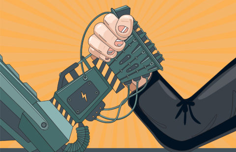

Risks of Autonomous Robotics In Covid-19:
Job automation is generally viewed as the most immediate concern. If robots are implemented this will mean less humans are required therefore they are at risk of losing their jobs. This is primarily if a person is performing predictable and repetitive tasks they could be at risk. Acute Causes of Injuries: Working with and around robots can prove to cause injuries. The top leading causes of work-related injuries include, overexertion and bodily reaction, slips trips and falls and contact with objects and equipment. Over exertion may include non impact injuries from excessive physical effort, for example lifting and transporting the robots. Injuries can also occur when a person makes contact with a moving robot.
